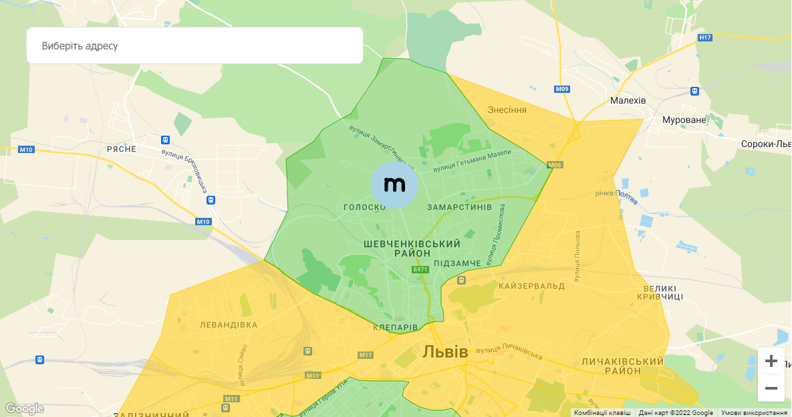

<main class="container">
  <div class="main">
    <h2>Доставка та оплата</h2>
    <div class="wrapper">
      <div>
        
        <p class="green">Зелена зона</p>
        <p>В межах зеленої зони ми доставляємо протягом <span class="green">1 год.</span></p>
        <p>Мінімальна сума замовлення в цю зону становить <span class="green">300 грн</span></p>
      </div>
      <div>
        
        <p class="yellow">Жовта зона</p>
        <p>В межах жовтої зони ми доставляємо протягом <span class="yellow">1.5 год.</span></p>
        <p>Мінімальна сума замовлення в цю зону становить <span class="yellow">400 грн</span></p>
      </div>
    </div>
    <div>
      
    </div>
    <div>
      <p>Команда «Monosushi» пропонує надзвичайно зручну систему доставки та оплати. Чіткість наших стандартів роботи
        забезпечує швидке і якісне виконання замовлень для наших гостей.</p>
      <p>Ми поділили Львів на умовні зони доставки – зелену та жовту. Для кожної зони ми чітко визначаємо час доставки.
        Зелена зона доставки знаходиться ближче до нашої кухні, тому замовлення в цю зону доставляються – до 1 год. В
        жовту
        зону, яка знаходиться значно далі – до 1,5 год.</p>
    </div>
    <h2>Оплата</h2>
    <div class="wrapper">
      <div class="wrapper">
        
        <div>
          <h3>Оплата готівкою</h3>
          <p>Розраховуйтесь за свої улюблені сушики готівкою при отриманні.</p>
        </div>
      </div>
      <div class="wrapper">
        
        <div>
          <h3>Безготівкова оплата</h3>
          <p>Розраховуйтесь за свої улюблені сушики онлайн або карткою при отриманні.</p>
        </div>
      </div>
    </div>
    <div>
      <p>Ми пропонуємо Вам 3 найпоширеніші варіанти для розрахунку: готівка, оплата онлайн або ж розрахунок карткою.</p>
      <p>Просто позначте найбільш зручний для Вас спосіб оплати при оформленні замовлення на сайті або ж повідомте про
        це
        оператора по телефону.</p>
      <p>Доставка «Моносуші» – це чіткі стандарти роботи, високий рівень сервісу та турбота про кожного гостя. Ми щодня
        розвиваємось, щоб почути лише три слова «Моносуші – це любов».</p>
    </div>
  </div>
</main>
